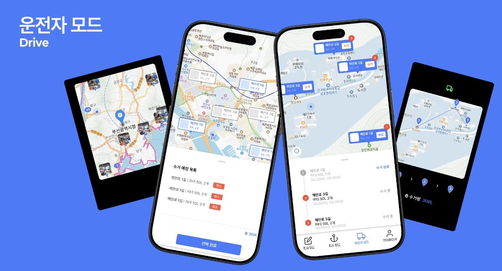

바다지키미
2024.09 - 2024.10 (3인 팀 프로젝트/백엔드 담당)

🧠 Background
저희 팀은 바다쓰레기를 수거하시는 ‘바다지키미’ 분들을 지원하기 위한 앱 개발을 주제로 선택했습니다.
바다지키미는 관리자, 조사자, 청소자, 운전자 등 여러 역할로 나뉘어 활동하는데, 각자가 맡은 역할에 집중하면서 더 효율적으로 일할 수 있도록 돕는 것이 목표였습니다.
특히 각 역할별로 어떤 데이터를 어떤 방식으로 제공해야 실제 현장에서 도움이 될지를 고민한 것이 프로젝트의 핵심 기획 과정이었습니다.
👩🏻💻 My Role & Contribution
- 팀장 역할 수행: 프로젝트 일정 관리 및 팀원 협업 조율
- 백엔드 전반 개발 담당: Django REST Framework 기반 API 서버 설계 및 구현
- 역할별 워크플로우 API 구현
- 조사자: 예측 데이터 입력
- 청소자: 실제 수거 데이터 기록 및 환산 로직 적용
- 운전자: 미수거 데이터 조회·수거 완료 처리 및 운반 로그 기록
- 관리자: 사용자 관리(생성/조회/삭제), 전체 통계 API 제공
- 데이터 처리/통계 기능 개발: 날짜별 수거 추이, 쓰레기 유형별 비율, 예측 vs 실제 비교 API 구현
- 권한 기반 인증/인가 적용: JWT(SimpleJWT) 기반 로그인, Role 기반 접근 제어
🔨 Technology Stack
Django REST Framework, JWT(SimpleJWT), Swagger
💬 회고
이번 해커톤을 통해 가장 크게 배운 점은 사용자 중심의 사고였습니다.
처음 기획 단계에서는 기능을 최대한 많이 넣고 화려하게 만들어보자는 욕심이 앞섰습니다.
하지만 조사를 진행하면서 실제 바다지키미 분들이 대부분 중장년층이라는 사실을 알게 되었고,
이분들에게는 화려한 기능보다 직관적이고 꼭 필요한 기능이 훨씬 중요하다는 것을 깨달았습니다.
이 경험을 통해 프로젝트를 기획할 때마다 ‘사용자 입장에서 정말 필요한 것은 무엇일까’를 우선적으로 고민하는 습관을 갖게 되었습니다.
또한 이번 프로젝트를 하면서 도메인 이해의 중요성을 절실히 느꼈습니다.
관리자에게는 어떤 데이터가 가장 의미가 있을지, 운전자는 어떤 화면 구성이 있어야 효율적일지 등을 고민하면서, 기술 구현 이전에 그 분야를 깊이 이해해야 한다는 점을 알게 되었습니다.
특히 바다지키미 분들의 실제 업무 과정과 불편함을 이해하려는 과정이 프로젝트 방향을 크게 바꿔주었습니다.
마지막으로, 무박 3일 동안 부산에서 진행된 해커톤은 힘들었지만 팀원들과 몰입해서 개발하며 즐거운 경험을 쌓을 수 있었습니다.